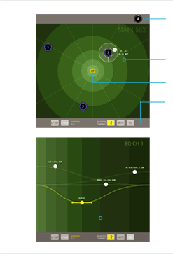
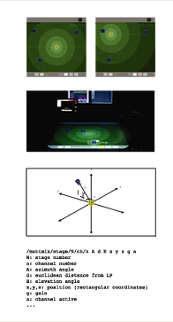
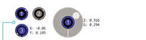
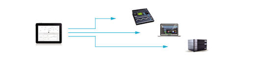

| Audio mixing is both a technical and an artistic task. Nowadays it is even a fundamental component in the performance of a number of artists. This task is usually achieved with the use of "panpots" and faders, which are the standard controls in mixing desks. But perhaps it is time to question a design that has remained practically untouched for around six decades, taking profit of current state of the art technologies and let interface design for audio mixing catch up with avant-garde spatial mixing technologies. We propose a control interface that may be used to control a mixer, a DAW or a mixing engine (such as a Meyer's D-Mitri system) in order to simplify and improve the mixing process, taking into ac- count the spatial features of technologies such as surround and 3D audio and exploiting the features of multitouch interfaces. |
|
||||||||||
|  | Inactive Zone: channels are initially located here before being moved to the desired place. When channels are in this position, they remain muted and do not generate any control data. |
 |
|
||||||||
|  | |||||||||||
| Channel: 3D positionable, with gain control or Surround position, with gain and LFE control or stereo plus gain and LFE controls Equalizer: 4-band parametric, multitouch enabled equalizer per channel. |
|||||||||||
| Paper prototype | Hi-fi prototype | User tests | Application development (pending) | ||||||||
|  | |||||||||||
| Table computer app: the prototype is currently working on a multitouch table, but the finished app would run on a tablet and would be able to control mixers, DAWs and or mixing engines | |||||||||||
{kind=link}
{kind=link}
{kind=link}
Published in Proceedings of the New Interfaces for Musical Expression (NIME2011) conference: www.nime2011.org
More information: jp [at] jpcarrascal [dot] com / sergi.jorda [at] upf [dot] edu
Music in demo video: "Se desvanece" by Fabricamusic.com